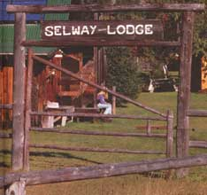

A 19th-century hunting lodge joins the 20th-century with an up-to-the-minute, custom-designed solar
array.
Over the past 93 years the Selway Lodge has gone through several transformations. Built in 1898. the lodge was the centerpiece of a 100acre cattle ranch and sawmill deep in Idaho's Bitterroot wilderness area, reachable only by fourteen miles of trail or a rather exciting bush plane ride. By the 1920s, the many cabins scattered around the property (regularly visited by bear, cougar, elk. and deer) served as a summer hunting and fishing, retreat. Though the property shrank in size when a good chunk was sold off to the Forest Service, the housing complex expanded: Two houses, a dorm, and several outbuildings were added to accommodate the growing number of visiting outdoor enthusiasts.
Despite the growth, the lodge continued to rely on a primitive hodgepodge for its energy needs: gas generators: kerosene lamps: and propane-powered refrigerators and stoves, the fuel for which had to be flown n in regularly at great expense and danger.
Last summer, the Selway Lodge entered the 21st century. The owner. Pat Millington, sprang for a $22.000 solar array (including a Couple of Sunfrost refrigerator/ freezers) to provide all of the lodge's (minus the two houses') energy needs. The entire package was installed over the course Of a couple of days by Sunelco, an alternalive-energy company located in Hamilton. Montana.
The project Lot a running start before it even got off the ground: Several weeks of preparation and pre-assembly assured success before some seven plane loads, of equipment took off into the wilderness. The Millington's chose a system using Solarex 60-watt solar modules. These modules (what we see as "panes" of solar-activated material) were mounted on Solarex mounting, structures. Four six-module structures were then bolted together with a set of top and bottom plates.
Soon the arrangement was moved into place and bolted securely to the building's rafters. The array was divided into two subarrays, each with its own individual charge controller-important for preventing overcharge of the batteries. Two fused disconnects (fused on/off switches) provided complete flexibility and safety-both the array power and batter\ power can he individually disconnected.
Sixteen batteries (350 amp-hour fork-lift type) were employed-lour in a series to yield 24 volts with four sets in parallel to yield 1400 amp-hours of storage-but hecause of the distance involved between the cabins and the battery bank, all of the loads were designed to operate on 120 volts AC
Necessity and convenience were factors in the decision to add two inverters, which convert DC electricity to 120 VAC electricity. First. the Lodge demanded maximum reliability. If one unit were to fail, the lodge could be run off one inverter. Second. the Lodge boasts some 30 light fixtures as well as refrigerators, kitchen appliances, and a washer and dryer-so it became necessary to separate the loads. One inverter was chosen to handle the lighting while the other took on the heavier power users. The benefit? None of the lights dimmed when a large motor started. Though separating the loads in this way is not crucial, Pat found this a good solution to the constant "browning" of the Lodge.
With no moving parts, and a maintenance schedule that only requires watering the batteries three times a year, the Selway's system is stunningly simple. Perhaps its greatest asset is its cost-effectiveness. Pat expects to recoup her investment in five to six years; after that, the Selway Lodge array rides for free. The batteries are expected to last 10 to 15 years, the solar panels at least 30.
But the solar solution provided more than just economic relief. During the threemonth summer season, about 30 bottles of propane had to be flown in. And in case of an accident, needless to say, the Millington's would have been their own fire department. "Between the fumes and the spills," says Pat, "I'm surprised the lodge has stood for as long as it has." Pat also got the chance to replace two older gas refrigerators with two 19 cubic-foot refrigerator/freezer units. This again reduced the propane consumption and greatly expanded food-storage space.
Now with lighting in the main lodge, dinner time is a much more, well, enlightening experience. Admits Pat: "I do miss dining by those kerosene lamps, and the old conversation our walls have heard many times before."
Just a few years ago, solar power made sense only for remote hideaways-and then only if buttressed by a backup system. "Today," says Dan Brandborg, owner and president of Sunelco, "photovoltaics can provide up to 90% of the annual energy needs of a house almost anywhere in the country." And since photovoltaics are quickly becoming an economical source of electricity for the power companies, why not beat them to the punch?
To understand photovoltaics, you have to understand electricity. Envision a piece of metal such as the side of a car. As it sits in the sun, the metal warms. This warming is caused by the excitation of electrons, bouncing back and forth creating friction, and therefore heat. Add a mechanism (say a solar cell) to control the flow of electrons and voila! Electricity. Oversimplified, perhaps, but PV boils down to one simple act: the flow of power.
Now that you know electricity, you can understand how PV power flows. First you have the source of PV power, the sun. It's abundant, it's cheap, and it's everywhere; all you have to do is harness it. Enter solar cells. Capable of generating 50 watt-hours of electric power, they sit in the sun and generate power as they warm-simply, quietly, without moving parts or byproduct pollution.
This power then flows through a regulator and into the battery bank. Batteries are the heart of a PV system. They store almost all the power the system delivers. The one drawback to this "power storage" unit is the amount of power loss associated with all batteries-roughly 15 to 25%. They "self discharge" a portion of the power they store; for example, if you charge a battery with 1000 watt-hours, you will only receive 800 watt-hours when discharging.
After a battery is charged, though, power can be used day or night, through sunshine and clouds. DC power (the type of power needed to illuminate a lights can to used directly from the battery, traveling via regulator (to control flow to and from batteries) and a fuse box (for overload protection and safety). AC power (used for heavy-duty items such as a dishwasher) can be accessed by means of an inverter. Simply, the inverter converts DC (battery) electricity to 120 VAC electricity. Now you can operate just about any electrical item in the house by means of PV power!
But is PV for you? Maybe. If you live more than half a mile away from a utility line, PV could be cost-effective. The initial cost of a solar electric system is usually less than the power companies charge for line extension. If you are on utility power at present, PV is not a cost-effective move. Utility power is much cheaper than PV power. Why? "Because we have not yet begun to pay for the externalities of fossil fuel and nuclear generating plants," says energy expert Les Clawson, "Power costs will escalate down the road. We are already starting to take a tax hit for damage caused by acid rain, global warming, and nuclear waste disposal. Once you figure in the costs incurred by environmental damage, it's easy to see how costly utility power will be in the future. It'll be more than double your power bill every month."
PV is also competitive when compared to other alternative power sources such as wind- and hydropower. While harnessing wind and tapping a waterfall can be good sources of power (provided you have yearround dependable access to a windy ridge or a river with a healthy flow of water and good vertical drop), solar has the advantage of sunlight being fairly universal and PV arrays having no moving parts to wear and eventually fail.
The most prevailing case for photovoltaics may be the diversity of reasons to invest in it. First, of course, are the economies of producing power in remote locations. Second, the security of having a home power supply. Third, PV allows power consumers to take a personal stand on environmentally threatening issues. And fourth, well, as PV owner Bob Owen put it, "I just wanted to get away from that damn generator noise." Sounds good to us, too.
PV company sees a sunny future.
Montana's Dan Brandborg was pay ing attention when experts saic that, to improve the health of the economy, one should focus on the produc tion of "value-added" products. This typi cally involves taking a plentiful inexpensive local resource and converting it into something more useful and, hence more valuable.
Historically, in Montana "resource" meant timber or minerals, but Brandborg had his eye on something more environmentally benign than the blockish clearcuts near his cabin in southwestern Montana. His research told him that the most valuable and abundant resource in the "Big Sky Country" is-well, sky.
Today, Brandborg's business, Sunelco Inc. (the Sun Electric Company), sells solar electricity systems that enable hundreds of people around the country to take a plentiful resourcesunlight-and transform it into a highly useful product: electricity.
What's more, by selling solar panels, those slabs of silicon that convert sunshine into electricity, Sunelco has quickly become a prosperous example of the new wave of "green," or environmentally conscious, low-impact businesses that communities are seeking.
The principles of solar electricity, or photovoltaics ("PV" in industry shorthand) have been known for decades, but because of high costs and relatively low efficiency they didn't come into their own until the U.S. space program put them to work. The same qualities that made solar electricity attractive to NASA in the '60schiefly its flexibility and its reliability in extreme conditions-make it an attractive choice for people seeking self-sufficiency.
Sunelco's founder grew up in an environmentally aware family. Fascinated by the potential of solar energy, Brandborg worked two years in Maryland for Solarex, the nation's largest manufacturer of solar panels. Then he saw an opportunity to bring that experience out west.
"When I worked for Solarex all their sales were to the western United States, " he recalls, "so I thought, 'Why couldn't we do this from Montana?"' Soon he and his wife Becky were trying just that.
Setting out in the fall of 1985 with just $4,000 in start-up money, he put together a mail-order catalog and started designing and shipping PV systems to customers throughout the West.
Since then Sunelco's gross sales have doubled every year. Working at first from his small cabin up Tin Cup Creek, Brand borg soon expanded to a tiny office in nearby Darby, Montana. Now Sunelco has six fulltime employees, kept busy answering the constantly ringing phones and designing, shipping, and sometimes aiding in erecting PV systems.
Their growth is due in part to the PV industry finally coming into its own and achieving a new level of sophistication. When Brandborg first began learning about solar panels there was a limited pool of people to talk to. "I read two good books on photovoltaics," Brandborg says of his education, "and in two years I knew more about it than most people in the industry, mostly because I played with it."
He still plays with it and his home on a tree-lined residential street in Hamilton is a model of what PV has become today. A fixed array of roof-mounted PV modules, invisible from the street, keep the batteries topped up. A heavily insulated refrigerator/freezer with a high-efficiency compressor shares kitchen space with the gas cooking range. Hot water is provided by a "Copper Cricket" solar hotwater system, supplemented as necessary by a tankless gas water heater.
Brandborg, a "learn-it-by-living-it" solar junkie, monitors several more meters than are absolutely necessary in a normal house setup so that he can keep meticulous records of energy production and use. It's that hands-on knowledge that Brandborg finds valuable when helping customers.
Brandborg designs systems that will meet a customer's realistic demands, rather than trying to change or limit that demand. New installations are more complex but much more versatile. The standard components of a system include the solar panels, a bank of batteries, and an inverter which converts the 12/24-volt DC current from the batteries into the 110-volt AC on which most household appliances run.
Running a house on solar electric power involves a few compromises, most of which relate to energy storage. "I have to check the batteries pe riodically," homeowner Dick Fichtler reports, "and it doesn't have unlimited power. When we designed the system - we didn't anticipate some loads, like running the vacuum cleaner so often." Keeping track of the state of the charge in the batteries and topping them off with an alternative power source if necessary helps him avoid any problems with the PV system.
The key is to shift high-demand uses away from electricity to other resources whenever possible. Space heating, cooking, and even refrigeration can usually be accomplished with propane. All other electrical demands need to be as efficient as possible.
Although Sunelco is fielding an increasing number of inquiries from customers with access to power lines, PV systems aren't generally competitive with utility rates-yet. For now, the typical customer for a solar electric system is someone with a remote cabin or vacation home.
Home systems aren't the only use for solar electricity, though. Sunelco has helped ranchers take advantage of PV systems to pump water to their livestock in remote pastures and to provide the juice for electric fencing. Recreational vehicle owners are buying PV systems to run their lights and TVs, without the annoyance of a noisy generator or the cost of a hookup. Brandborg and his design team have even put together a PV package that was mounted on an oceangoing yacht.
While the demand for PV systems is increasing, it's still a relatively small market, and Brandborg doesn't foresee any dramatic price drops soon. Awareness, not price, is what he counts on to bring new customers to Sunelco. As evidence, he cites one study of Portland residents in which solar power was chosen by 86% of the respondents as their first choice for providing additional power in the future. Another recent nationwide poll showed that energy efficiency was more important to move-up home buyers than location or schools.
"People love solar," Brandborg smiles.
Because of that, the Brandborg's continue to cope with the surprising growth of their company. Photovoltaics were not a sure thing back in 1985, and since then the field has become crowded with other start-ups. But a "sure thing" isn't what drew Dan Brandborg into the business. It's simply what he wanted to do.
"We just got on a different road, and hoped it would bring people to us," he said, surrounded by solar panels awaiting shipment. "I had no idea it would end up like this."
-Russ Lawrence
Editor's note: For more information on Sunelco, write Sunelco, PO Box 1499, Hamilton, MT 59840-1449, or call tollfree 1-800-338-6844.
|
 The lodge's solar array can see the Selway through 10 sunless days. |
Sunelco's Dan Brandborg checks the battery power of the Selway Lodge. The 16 batteries yield 1400 amp-hours of storage |
A bird's-eye view: The Selway Lodge (hero houses, a dorm, and many cabins) serves as a summer hunting and fishing retreat |
|
""I read two books on PV, and in two years, I knew more than most people in the industry."" Sunelco's Dan Brandborg. |
|
|